Computadora
Actividades
Tortuga Art 
Es un lenguaje de programación hecho para empezar a programar, está inspirada en LOGO. Consiste en presentar retos intelectuales que puedan ser resueltos mediante el desarrollo de programas sencillos y tiene un diseño muy sencillo para que los niños lo puedan entender.
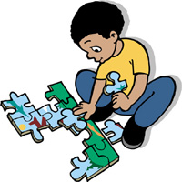
Los rompecabezas que consisten en unir las piezas para formar una imagen. Tortuga Art tomó esto e hizo que cada instrucción sea una pieza de lo que se va a construir, al juntar instrucciones vas armando lo que hará la tortuga. Hay dos formas de hacer que una instrucción se realice. La primera es dando clic en la instrucción. Si las instrucciones están en bloque se realizan desde arriba hacia abajo. La otra manera de hacer que la tortuga se mueva es hacer clic en la Liebre o la Tortuga que aparece en la ventana Proyecto en la parte superior de la ventana. En Tortuga Art existen diferentes tipos de instrucciones. En este manual solo veremos las instrucciones del bloque Tortuga y las del bloque Pluma.
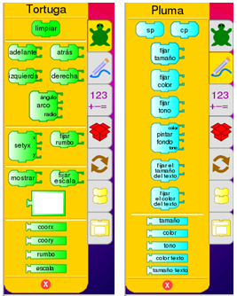
Las opciones que aparece en la parte superior de la ventana son:
Actividad
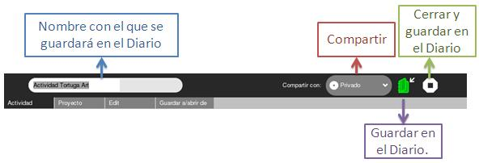
Compartir: Lo que tu escribas puede ser solo para ti cuando Compartir con está
Privado, pero si llevas el apuntador a Privado y das clic en el botón izquierdo del ratón te aparecerá la opción
Mi vecindario. Cuando elijas compartir con
de alguien más. También puedes compartir invitando directamente a alguien, para esto:
- Abre la hoja de Escribir.
- Ve a
Grupo .
- Busca al amigo con el que quieres trabajar.
- Pon el apuntador encima del dibujo de tu amigo durante unos segundos. Aparecerá la opción de Invitar a Actividad Escribir.
- Empiecen a trabajar juntos por turnos. Si intentan mover todos al mismo tiempo la tortuga no sabrá que hace
Proyecto
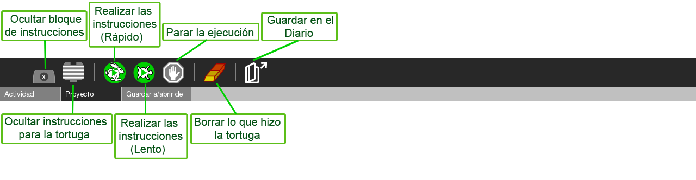
Edit: En este manual no se va a revisar esto.
Guardar a/abrir de
Vamos a usar esta opción para abrir los ejemplos que tiene Tortuga Art. Cuando abras un ejemplo pon atención en cómo hacen los programas, te servirá para aprender.
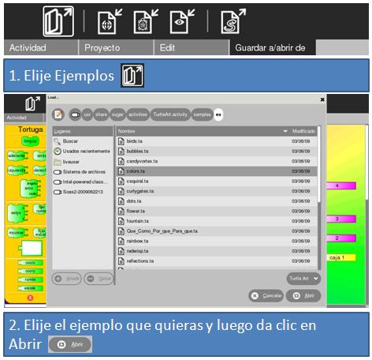
El bloque TORTUGA

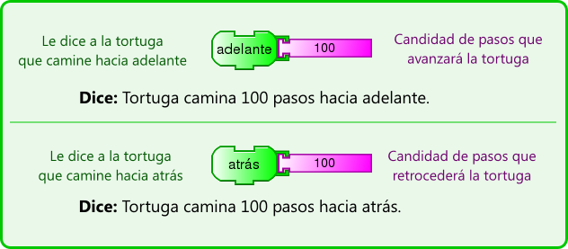
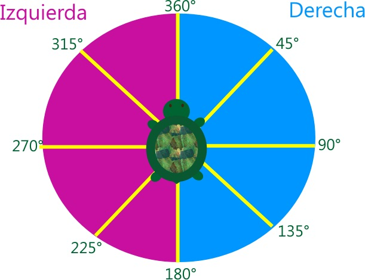
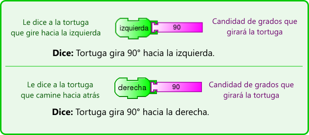
Adelante, atrás, izquierda y derecha son las instrucciones más básicas de la tortuga. Aunque existen otras que veremos a continuación es importante primero dominar esas cuatro. De esta manera será más fácil aprender lo demás.
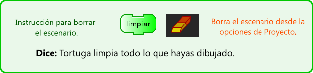
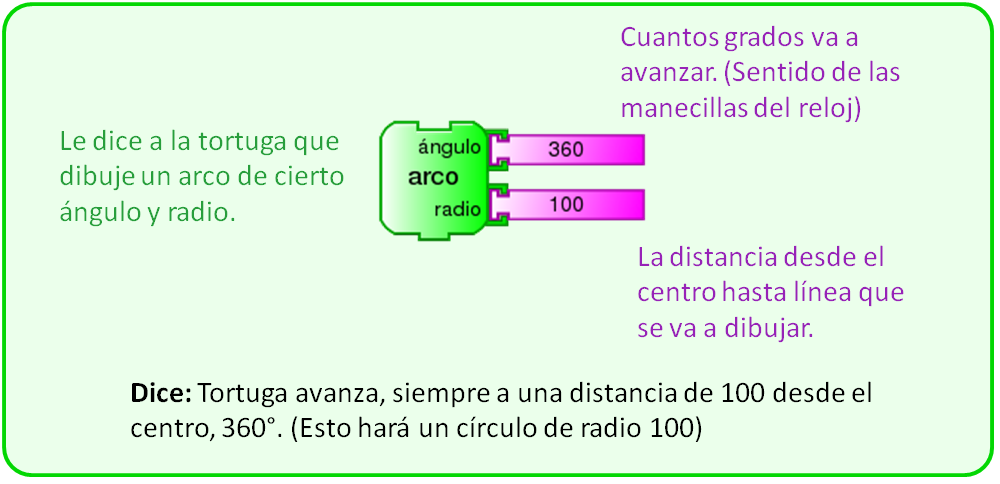
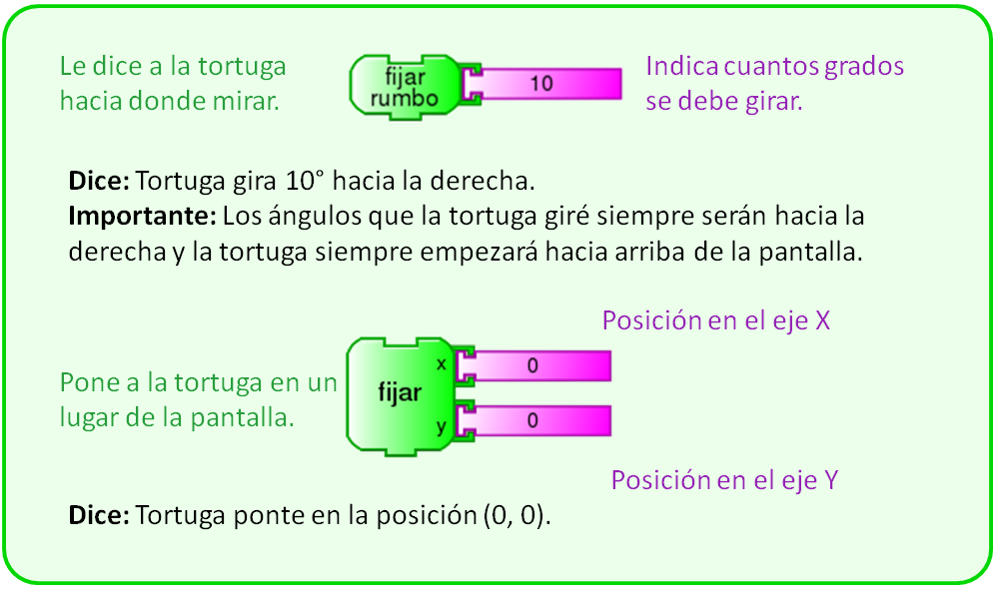
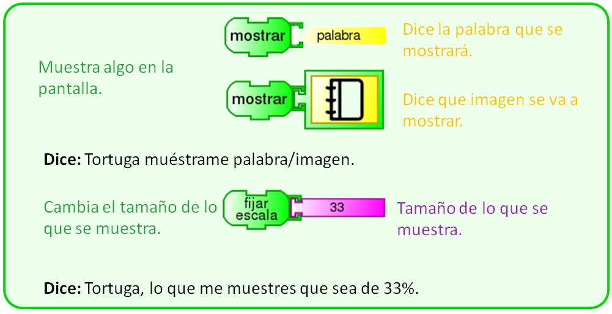
El bloque PLUMA
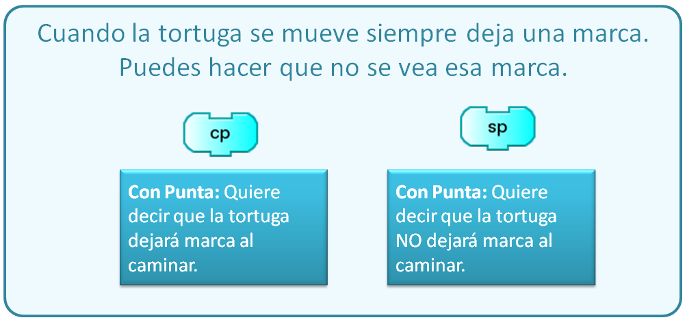
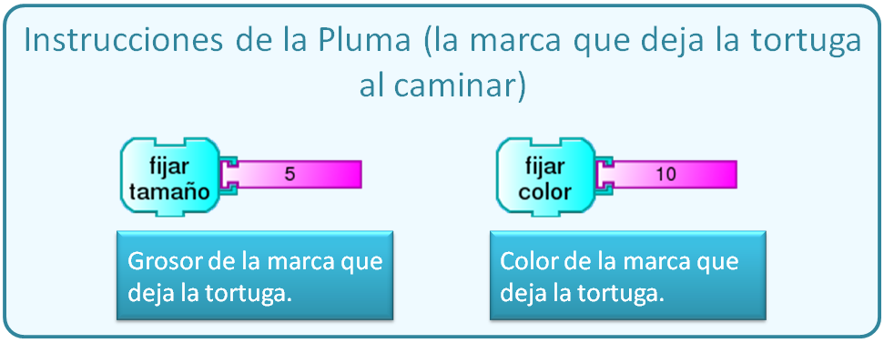
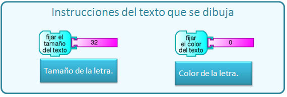
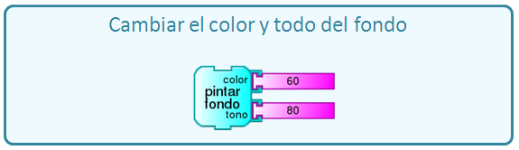
Tabla de colores